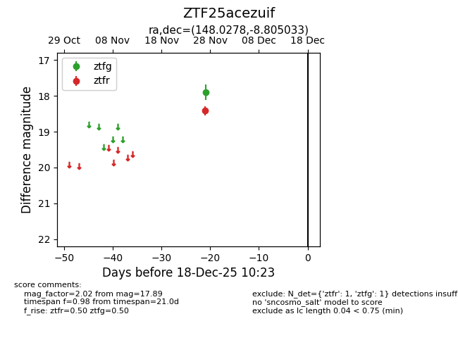
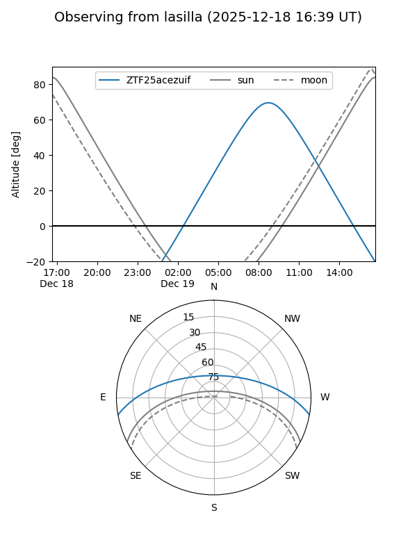
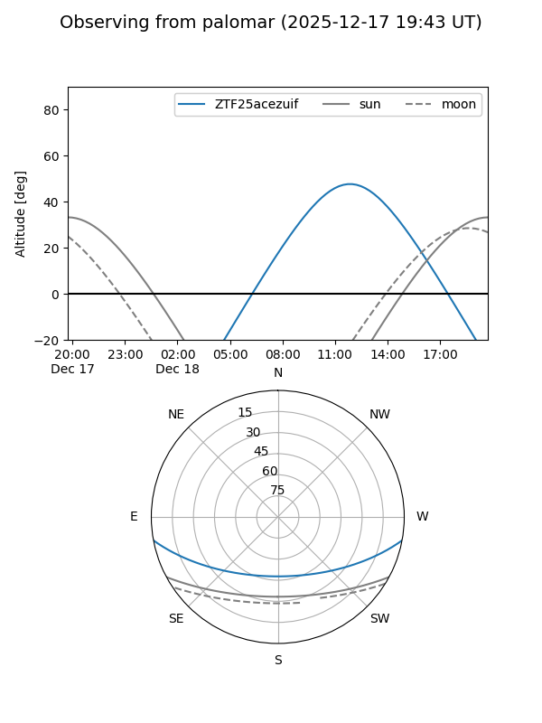

ZTF25acezuif
Target ZTF25acezuif at 2025-12-18 11:17
Aliases and brokers:
FINK: fink-portal.org/ZTF25acezuif
Lasair: lasair-ztf.lsst.ac.uk/objects/ZTF25acezuif
ALeRCE: alerce.online/object/ZTF25acezuif
alt names
ZTF25acezuif (ztf,fink_ztf)
Coordinates:
equatorial (ra, dec) = 148.0278,-8.80503
equatorial (HMS+DMS) = 09:52:06.67,-08:48:18.12
galactic (l, b) = (246.1249,+33.63674)
Photometry
last ztfg=17.89, ztfr=18.42
1 ztfg, 1 ztfr detections
Lightcurve

Visibility


Additional plots